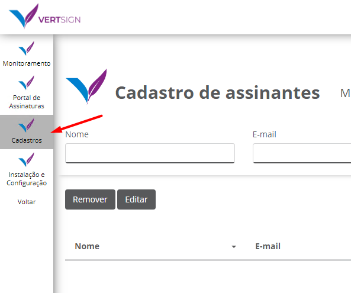
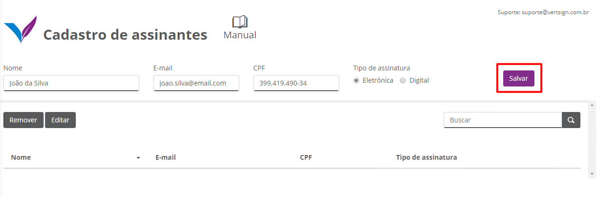

Cadastrando assinantes
Antes de tudo é necessário cadastrar assinantes para que sejam adicionados no momento de envio de um documento para assinatura. Acesse a página “Cadastros”, insira o nome, e-mail, CPF e o tipo de assinatura (digital/eletrônica) e clique em salvar.
Abaixo estão mais detalhes desses dois tipos de assinatura:
Assinatura Digital
A assinatura digital utiliza um Certificado Digital ICP Brasil para comprovar a autoria da assinatura. A assinatura digital garante autenticidade, integridade e não repúdio (signatário não tem como negar sua autoria). O Certificado Digital é a identidade digital da pessoa física e jurídica no meio eletrônico. É validado presencialmente, não permitindo fraudes. Se você necessita mandar documentos para fora de sua rede, é fundamental que haja confiança pública para que a assinatura seja automaticamente aceita pelos diferentes órgãos e empresas. Nesse caso, a assinatura digital é mais conveniente, pois possui a mesma validade jurídica de um documento com firma reconhecida em cartório.
Assinatura Eletrônica
Assinatura eletrônica coleta evidências para comprovar a autoria da assinatura em um documento e não utiliza um Certificado Digital. Estas evidências são coletadas no momento da assinatura. O Portal coleta três principais: a grafia do signatário (com uma caneta touch, dedo, mouse ou a imagem digitalizada), IP da máquina e geolocalização. A assinatura eletrônica viabiliza a migração de ações do dia a dia da empresa do meio físico para o digital, reduzindo custos operacionais e poupando tempo. Se você necessita apenas deixar de usar papel e agilizar os processos, então conformidade e confiança não devem ser um problema, e a assinatura eletrônica pode ser considerada.
 